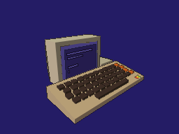
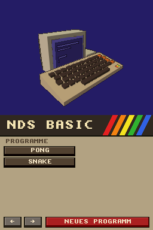
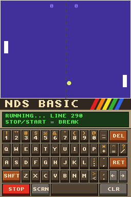
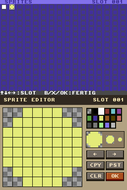

>_
Editor & Tastatur
Retro-Touch-Tastatur mit Shift-Lock, Listing mit Zeilennummern, Zeilen per Steuerkreuz auswählen und bearbeiten.
LIST RUN NEW EXIT
**** NINTENDO DS HOMEBREW ****
Ein BASIC-Interpreter im Stil der 80er-Heimcomputer – für den Nintendo DS. Tippe Programme auf der Retro-Tastatur, sieh deine Zeilen samt Zeilennummern oben, und drück RUN. Mit Grafik, Hardware-Sprites, Sound und Speichern auf SD-Karte.
Läuft auf Flashcarts, dem DSi/3DS (z. B. TWiLight Menu++) und in Emulatoren wie melonDS. Quellcode auf GitHub.


Eine einzige .nds-Datei, die deinen DS in einen Heimcomputer verwandelt.
Nach dem Start schwenkt auf dem oberen Bildschirm ein kleiner Low-Poly-Computer in 3D, unten stehen deine gespeicherten Programme – ein Tipp, und sie sind geladen.
Im Editor zeigt der obere Bildschirm das Listing mit Zeilennummern, der untere eine Tastatur im Stil der Brotkasten-Ära. Zeilen mit Nummer werden gespeichert, alles andere sofort ausgeführt – genau wie damals. RUN startet, STOP oder START bricht ab.
Dazu kommen ein Sprite-Editor zum Malen mit dem Stylus, ein Sound-Editor mit Klaviatur und eine eingebaute Hilfeseite mit allen Befehlen (SELECT).
/nds-basic auf SDAlles, was man für kleine Spiele und Experimente braucht – direkt auf dem Gerät.
Retro-Touch-Tastatur mit Shift-Lock, Listing mit Zeilennummern, Zeilen per Steuerkreuz auswählen und bearbeiten.
LIST RUN NEW EXIT
Eine 256×192-Pixel-Ebene hinter dem Text: Punkte, Linien, Rechtecke, Kreise und Flächenfüllung in 16 Farben.
PLOT LINE RECT CIRCLE PAINT
256 Sprite-Bilder (8×8) mit Touch-Editor, 64 bewegliche Hardware-Objekte mit Kollisionsabfrage.
SPRITE SPRHIT() STAMP
10 Melodie-Slots, eingespielt auf einer Klaviatur. Rechteckwellen mit drei Pulsbreiten oder Rauschen.
SOUND n SOUND n,1
Programme samt Sprites und Sounds als lesbare Textdateien – am PC bearbeitbar, auf dem Titelbild auswählbar.
SAVE LOAD DIR DELETE
Tastenabfrage per Bitmaske, Tastatur-Puffer, Pausen im 60-Hz-Takt, Zufall – und fertige Beispiele.
JOY INKEY$ PAUSE RND
Oben der obere, unten der Touch-Bildschirm – aufgenommen im Emulator.







Zeilennummern, GOTO, PRINT – und dazu Sprites, die über den Bildschirm flitzen. Mal im Sprite-Editor einen Ball in Slot 1 und spiel im Sound-Editor einen Ton in Slot 0 ein – dieses Programm lässt den Ball hüpfen und piept bei jedem Aufprall.
10 CLS: X=10: Y=10: DX=2: DY=1 20 PRINT "HALLO NINTENDO DS!" 30 SPRITE 0,1,X,Y,2 40 X=X+DX: Y=Y+DY 50 IF X<0 OR X>240 THEN DX=-DX: SOUND 0 60 IF Y<0 OR Y>176 THEN DY=-DY: SOUND 0 70 PAUSE 1: GOTO 30 READY. RUN
In drei Schritten vom Download zum ersten RUN.
nds-basic.nds (@ROM_SIZE@) laden – die Datei wird bei jedem Commit automatisch aus dem Quellcode gebaut.
Auf die SD-Karte deines Flashcarts bzw. DSi/3DS (TWiLight Menu++) legen – oder einfach in melonDS öffnen.
Gespeichert wird in /nds-basic auf der Karte. Für SD im Emulator in melonDS die
DLDI-SD-Emulation aktivieren.
/nds-basic kopieren – sie erscheinen auf dem Titelbild.
Bedienung, alle Befehle und Funktionen, Grafik, Sprites, Sound, Speichern und die Beispiele – ausführlich beschrieben.